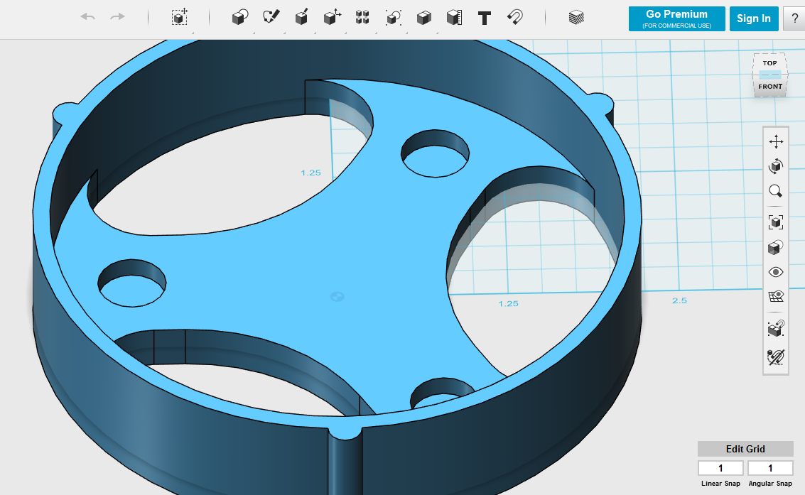
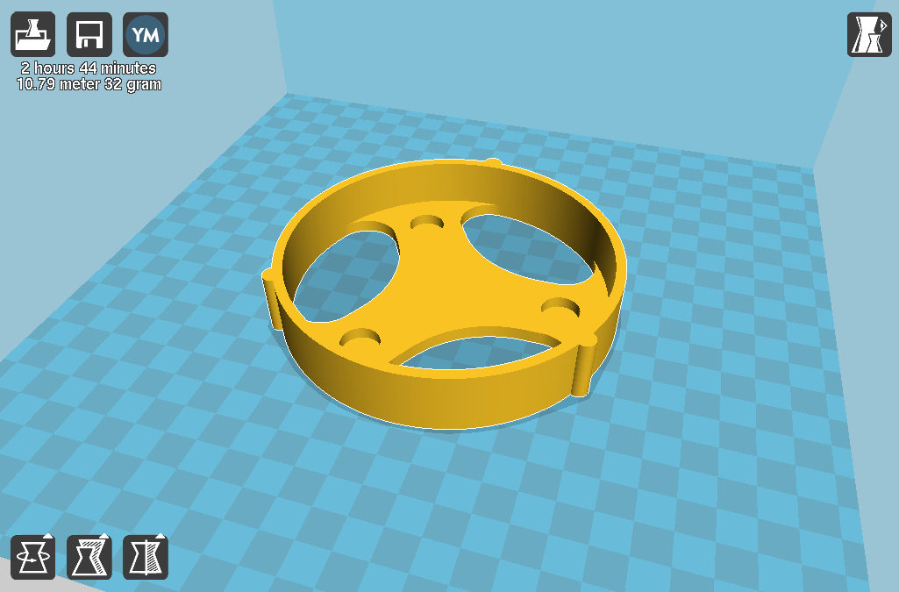

Layer by Layer:How the Printer Works


3D printing is what’s called an additive manufacturing process, meaning that the printer adds material over and over again as it works to create a finished object. It works by repeatedly laying down many thin, individual layers of material (usually plastic) over time, which stick together and eventually form a solid physical object.
The printer consists of several important parts:
- The Extruder: A heated nozzle, which can move left, right, and up and down (x, y, and z axes) all around the printer. The printing material is heated to a very high temperature within the extruder, and is then melted as it passes through the extruder tip. It comes out in a very thin, molten, stringy trail, which the printer lays down in certain locations.
- The Print Bed: The flat surface on which the object is built on. Since each printed layer builds off of the next one, it is very important that this (or any other printer component) is not shifted or bumped. The print bed may be heated to help the printed object stick, or adhere, better.
- The Filament: The material being printed with. The filament is usually plastic, since plastics have properties favorable to printing (low melting temperature, fast cooling rate, etc). Some common materials include ABS (durable plastic; LEGOs are made of ABS) and PLA (eco-friendly and easy to work with). But, you can print in more than just plastic! Some of the more unusual filaments out there include “ninjaflex” (a flexible and durable material), wood filament, tissue cells (used for printing organs, tissue), and even edible food!
How the Printer Knows What to Print
3D objects are first modeled in a CAD (computer aided design) program. They are then saved and input into another “slicer” program, which takes the file and decides how to cut it up for the printer to print in layers. Within the slicer program, you can decide on the temperature to print at, the density of the object (how solid/hollow it will be), and more, before hitting “print”. The process is not so unlike normal 2D printing on paper.
